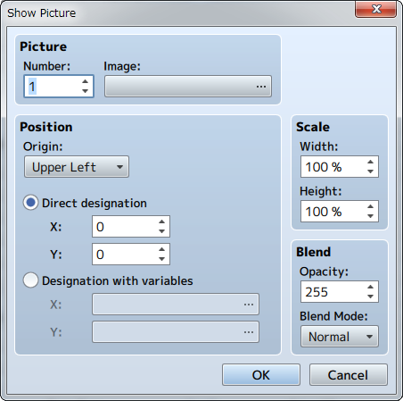
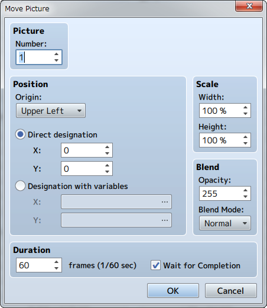
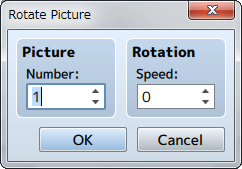
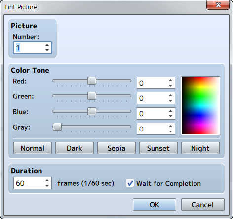
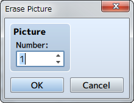

Picture
Show Picture

Function
Displays a picture (static image) on the screen.
Settings
- Picture: Number
- Specify a control number (1 to 100) to link to the picture.
- Picture: Image
- Specify the picture to display.
- Position
- Specify the display position of the picture. First, select the [Origin Point] of the picture which can be the [Upper Left] or [Center] of the screen. After doing so, specify the position using coordinates which will use (0, 0) as the origin. When using [Direct designation], enter in coordinates (-9999 to 9999) for [X] which will be the horizontal position, and [Y] which will be the vertical position. To specify the location using variables to specify coordinates, select [Designation with variables], and specify the variables for [X], and [Y].
- Scale
- Specify the percentage to scale the image (between 0 and 2000% with 100% being the original size) using the [Width] and [Height] fields.
- Blend
- Specify the opacity (0 to 255) of the picture under [Opacity]. The smaller the value, the more transparent the picture will be (will not be displayed if 0). Specify how to blend the image colors when changing the opacity of the image under [Blending Mode].
- [Normal] ・・・ Displayed as normal.
- [Additive] ・・・ Displayed in a whiter color.
- [Multiply] ・・・ Displayed in a darker color.
- [Screen] ・・・ Displayed in a brighter color.
（March 1st, 2016 Update）
Remarks
- 100 pictures can be displayed at one time. The higher the control number, the higher it will be prioritized when displayed.
- If there are multiple of the same control number, only the picture that was displayed last will be displayed (all earlier pictures will be erased).
Move Picture

Function
Moves the currently displayed picture.
Settings
- Picture: Number
- Specify the control number (1 to 100) for the target picture.
- Position
- Specifies the position of the picture after it has been moved. First, select the [Origin Point] of the picture which can be the [Upper Left] or [Center] of the screen. Next, specify the position using coordinates which will use (0, 0) as the origin. When using [Direct designation], enter in coordinates (-9999 to 9999) for [X] which will be the horizontal position, and [Y] which will be the vertical position. To specify the location using variables to specify coordinates, select [Designation with variables], and specify the variables for [X], and [Y].
- Scale
- Specify the percentage (0 to 2000%) by which to scale the [Width] and [Height] of the picture after it has been moved.
- Blend
- Specify the opacity (0 to 255) of the picture after it has been moved under [Opacity]. The smaller the value, the more transparent the picture will be (will not be displayed if 0). Specify how to blend the image colors when changing the opacity of the image under [Blending Mode].
- [Normal] ・・・ Displayed as normal.
- [Additive] ・・・ Displayed in a whiter color.
- [Multiply] ・・・ Displayed in a darker color.
- [Screen] ・・・ Displayed in a brighter color.
（March 1st, 2016 Update）
- Time
- Specify the amount of time moving the picture will take in number of frames (1 to 999). 1 frame is equal to 1/60th of a second.
- Wait for Completion
- When enabled, processing will wait for this event command to finish.
Rotate Picture

Function
Rotates the displayed picture.
Settings
- Picture: Number
- Specify the control number (1 to 100) for the target picture.
- Rotation: Speed
- It will be rotated clockwise when this number is positive, and counterclockwise when negative. （April 21th, 2016 Update）
Remarks
- The rotation axis (center point) will be set to the origin that was specified for the target picture when it's last displayed/moved.
Tint Picture

Function
Changes the color tone of the picture that is displayed.
Settings
- Picture: Number
- Specify the control number (1 to 100) for the target picture.
- Color Tone
- Specifies the amount of each [Red], [Green] and [Blue] to add (-255 to 255). Set the strength of the gray scale filter (0 to 255) by changing the [Gray] value. The higher the value, the stronger the overall color tone will be. Check the color tone using the preview area on the right.
- Time
- Specify the amount of time changing the tint of the picture will take in number of frames (1 to 999). 1 frame is equal to 1/60th of a second.
- Wait for Completion
- When enabled, processing will wait for this event command to finish.
Remarks
- The changed color tone will be effective until updated again by this event command.
Erase Picture

Function
Erases the picture displayed.
Settings
- Picture: Number
- Specify the control number (1 to 100) for picture to be deleted.